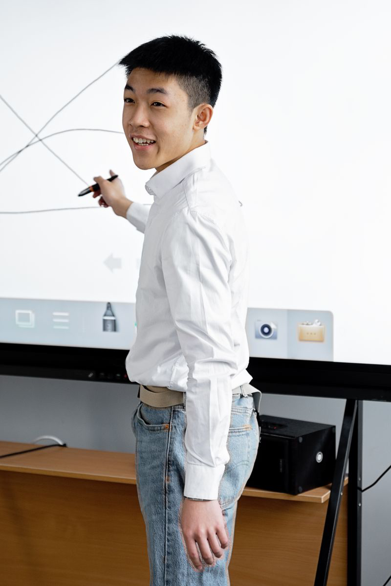
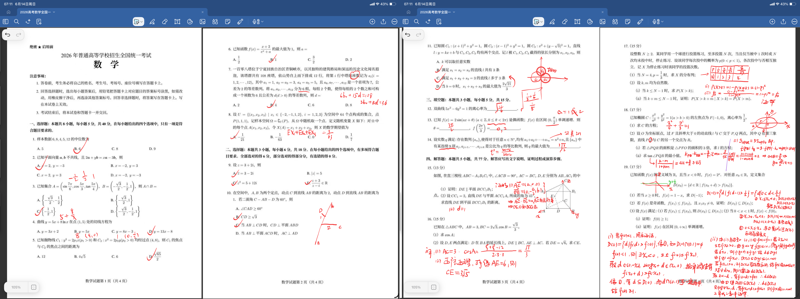
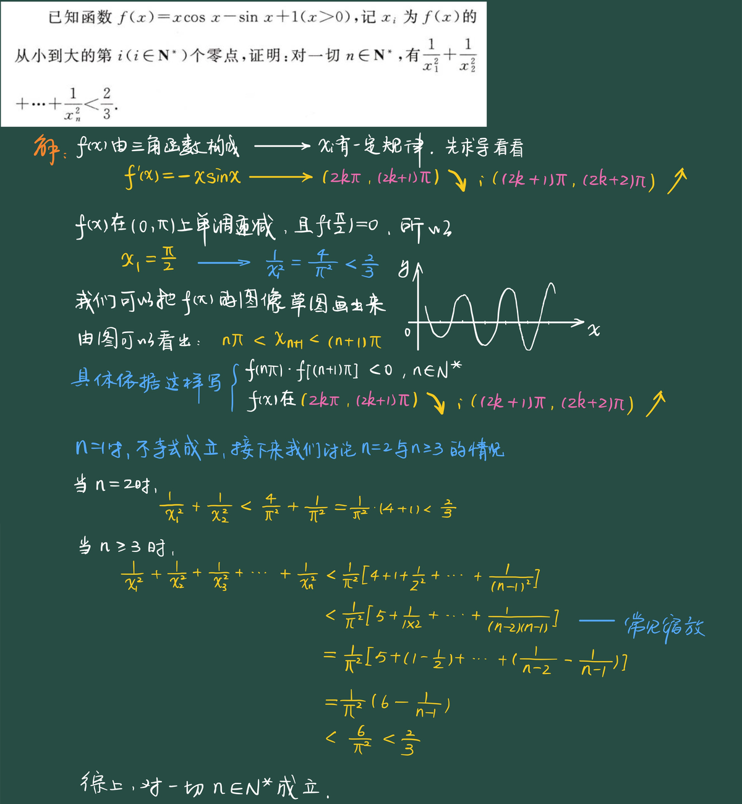
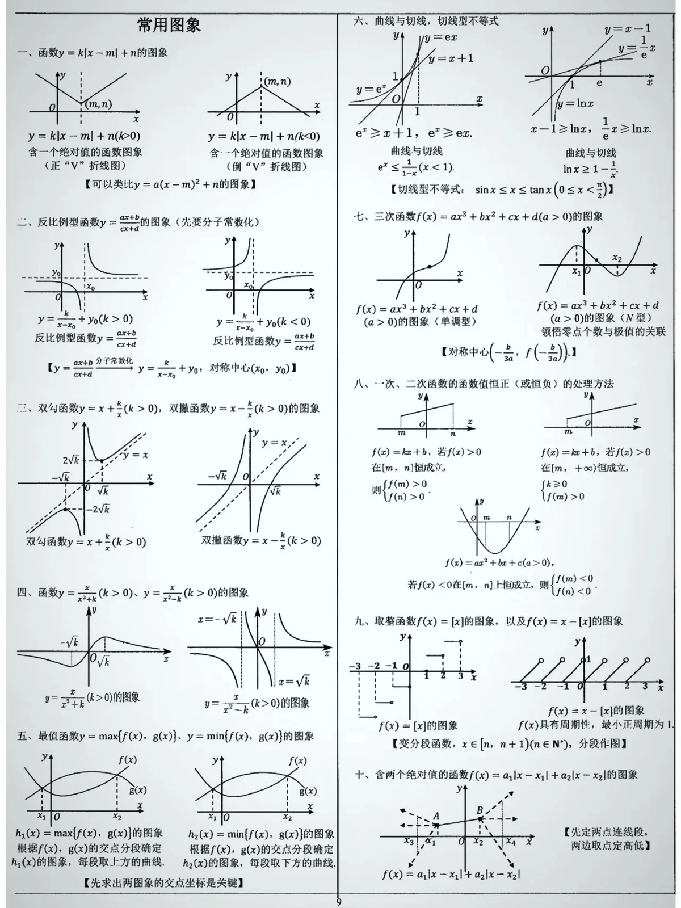
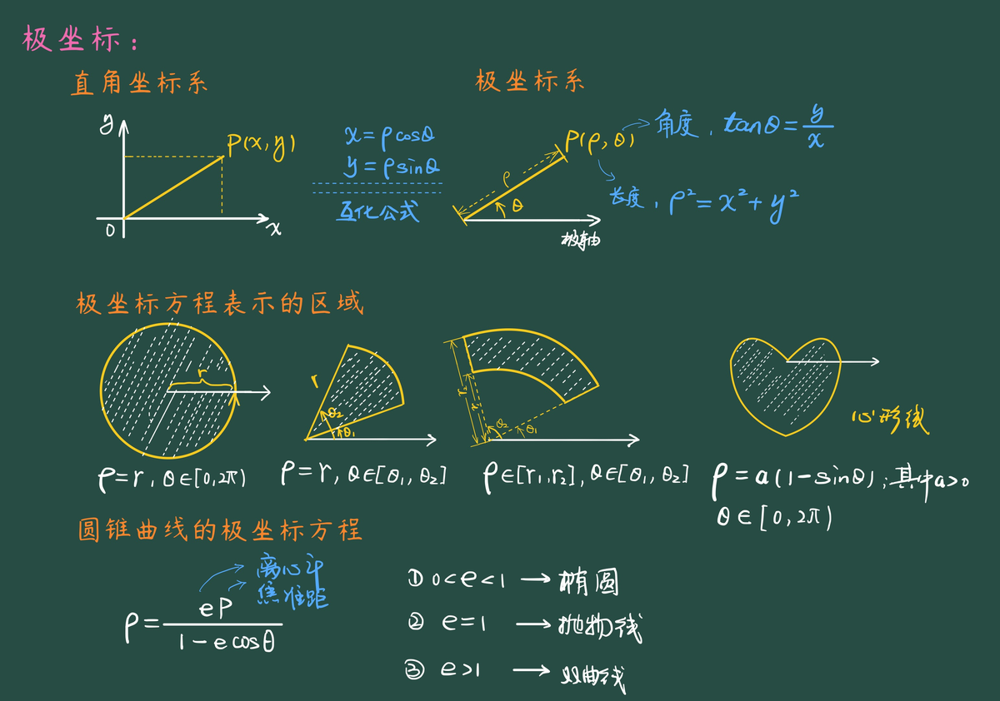

未来不缺会算的，缺的是会问的。
数学，练的就是提问的脑子。
课上听懂了，做题还是不会？卡住的不是不够努力——是一直在用初中的方法，学一门忽然需要「结构与迁移」的学科。
换个方法，学一题，通一类。
8 道题，测测孩子的数学直觉
不考公式，不考计算——只考孩子想问题的方式。能答对 3 道以上，说明底子不差，只是方法没跟上。
你的乖孙问你：爷爷，我们家上二楼有 10 级阶梯，我走一步可以跨一到两级，我上二楼有几种走法？
你的小老弟问你：哥，我班上同学的生肖恰好凑齐了 12 生肖，你猜猜我班上大概有多少名同学？
你有 100 块，老铁有 1 万块，你俩每局胜率都是五五开，每局赌注是 1 元，一直赌下去，请问你能不能赢下老铁的 1 万块？
无穷等比数列的公比 $|q|\in(0,1)$，数列的各项和等于各项平方和，问第二项的取值范围是多少？
设集合 $M=\{1,2,\ldots,100\}$，$M$ 的任一非空子集 $X$ 的最大数和最小数之和为 $a_x$，那么，所有这样的 $a_x$ 的算术平均值等于多少？
若 $f(x)$ 和 $g(x)$ 都是定义在实数集上的函数，且复合函数 $f[g(x)]=x$ 有实数解，则 $g[f(x)]$ 可以等于 $x^2+1$ 吗？
筷子折成三段后，能拼成三角形的概率是多少？
已知 $x,y\in\mathbb{R}^+$，$x+3y+\dfrac{3}{x}+\dfrac{4}{y}=12$，则 $x+3y$ 的最大值为多少？
孩子答不出来？不是他不聪明——是没人教过他「怎么想」。
写给家长的话
孩子初中数学考过年级前列，升入高中，第一次月考砸了——回家把书包扔在门口，饭也没吃。如果您家正在经历这一幕，这段话是写给您的。
后面的情节也相似：补课、一对一、刷题册、错题本，都试过；换了两三位老师，钱花了不少，成绩却钉在同一个分数上。孩子慢慢开始说：「我可能不是学数学的料。」
带了八年学生，我越来越确定一件事——卡住的不是孩子的努力，也不是聪不聪明。而是他一直在用初中那套「听懂 + 记住」的方法，去学一门忽然需要「结构与迁移」的学科。
不是变笨了，是一直在用初中的钥匙，开高中的锁。
往下看，这个问题有解。
—— 王老师
高中数学不是 18000 道题，是 300 个题根
高中三年，孩子面对的真题和模拟题加起来接近两万道。一道一道刷，刷不完；背解法，背不住——因为高考每年都在出新变式。题是背不完的，但题根只有 300 个。
什么是题根？同一类题目，不管题干怎么换、数字怎么改、情境怎么包装，背后都站着同一道「母题」——这就是题根。把 18000 道题逐题拆完，按命题逻辑归拢，最后凝成 300 个题根。每个题根下面，挂着它历年的所有变式。科学复习：
第一步 · 认根
拿到题，先别急着算。问自己：这道题的骨架是什么？它属于 300 个题根里的哪一个。
第二步 · 看变
站到出题人一侧：这个根今年动了哪个数、换了哪层皮、套了哪个情境。
第三步 · 挂串
每做一道变式，就把它挂回对应的题根下面。认一道，会一类——题越做越少。
把时间跨度拉到 25 年，规律自己会说话
高考数学的压轴题——导数、圆锥曲线——年年考、年年变。孩子刷了一堆卷子，却很难自己发现题目背后的规律；老师想带学生系统练，光是搜集、整理历年真题就要耗费大量精力，不少人只好拿近期模考题凑合。 缺少系统性，就题论题，是大多数学生和老师共同的困境。
破解之道，是把时间跨度拉到 25 年。当你将高考试题的脉络放得足够长，你就会清楚地看到其中的历史规律。
例如极值点偏移——从 2009、2010 的辽宁、天津卷开始，极值点偏移逐渐进入高中人的视野；到了 2016 年，在全国Ⅰ卷闪亮登台后，之后几年各地模考中出现了大量极值点偏移问题。以至于很多人断言：这种司空见惯的题目将很难再出现在高考中。然而，在 2021 年覆盖面积最广、参考人数最多的新高考卷及 2025 年全国卷压轴题中，极值点偏移的身影再次出现——一时间，这股热度再次升起。
正因如此，系统地研究高考真题才显得尤为重要。王老师从 2002 到 2026 年，搜集各地导数压轴真题，经过整理汇编、多维求解，以及题目的改编延伸，形成了自己的题串体系。它不仅适用于全国卷，还适用于各类地方卷。
在课堂上，我们将同类型的真题练透，深入把握命题规律。以近 25 年高考真题为导向，覆盖几乎所有的导数压轴题型——适合高中系统复习，直击高考。
可见，所谓新题，都是老根换了皮
以一道真题为例——2016 年全国 I 卷理科压轴题。左边，是背步骤的学生看到的；右边，是认出根的学生看到的。
2016 年全国 I 卷 · 理科第 21 题 · 压轴（零点问题）
已知函数 $f(x)=(x-2)e^x+a(x-1)^2$。若 f(x) 有两个零点，求 a 的取值范围。
只背步骤的学生眼里，这是一串背不完的分类
- 求导：$f'(x)=(x-1)(e^x+2a)$
- 对 a 分类：$a\geq 0$；$-\dfrac{e}{2}\lt a\lt 0$；$a\leq-\dfrac{e}{2}$……
- 每一类分别列表、算极值、画走势
- 极值算完，还要比端点趋势
- （分类总漏一种——漏一类，这一问的步骤分就丢大半）
分类背了十遍，参数一换，又是一道「没见过」的题。
认出根之后，分类不再是背出来的清单
分类没有取消，而是从三个动作里自然长出来——为什么分、以谁为界、每一类做什么，动作自己会告诉你。
这一串，后来还这样考过
- 2017 · 全国 I 卷 · 理 21设问同款「有两个零点求参数」——函数由两项变三项，讨论更深一层
- 2018 · 全国 II 卷 · 理 21「有两个零点」变「区间上恰有一个零点」——从数个数，到卡区间
- 2021 · 新高考 II 卷 · 22结构几乎复刻：$(x-1)e^x$ 再次登场——设问反向，给条件、证零点
- 2022 · 全国甲卷 · 理 21求范围变证关系「若有两个零点则 $x_1 x_2<1$」——极值点偏移的家
- 2025 · 全国 II 卷 · 18$\ln(1+x)-x+\dfrac{x^2}{2}-kx^3$ 三问连发：唯一极值点、唯一零点、比较 $2x_1$ 与 $x_2$——极值点偏移 2025 正考
- 2025 · 天津卷 · 20$ax-(\ln x)^2$ 恰有三个零点求 a、零点不等式收尾——设问同款，再来一次
这 300 个题根，是怎么来的

我是数学王老师，一个人教书，没挂靠机构。干了 8 年，带过 3 届高三，前前后后教过几百个学生。教得越久越觉得，高中数学难不在知识点多，是题年年换，考法年年变。
外面补课基本一个路子：多刷题、多背解法。题哪背得完？高考每年都出新花样。所以我花了几年时间，把 18,000 道真题一道一道拆开，找到题目底下那副骨架，凝成 300 个题根——孩子认得骨架，新题来了也不怕。
- 讲义自己写，变式自己编，批注自己画，每年跟着高考改
- 不让学生背题型、背套路，而是系统梳理，拆解讲透
- 0 销售，0 客服，微信 24 小时在线
学怎么验，课怎么教
怎么才算学会——懂、会、对、熟
听懂只是第一步；四步走完，这一类题才真正归孩子。
一节课：从根讲到变式
上次课错最多的题、最易卡壳的重难点，让做错的同学连麦重讲——卡在哪，当场就现形。
先放两道真题或问题，让学生先卡住，再顺势把核心概念带出来——概念从题里长出来，才能深入理解这个概念。
同一类题延伸拓展，总结命题规律和解答思路；弹幕随时喊停，没跟上就重来。
一道同构变式独立完成——真没学会的，我再变变题继续考。
卡住的那一步，才是最该讲的一步。
三五人的班，卡住了当场问、当场讲通。
班型与价格
三种班型，三种节奏——按需选择，按阶段付，人数越多，价格越低。
3–5 人小班课
跟班走节奏——同步课、一轮复习、二轮冲刺全覆盖。
- 高一/高二/高三各一班，水平接近，进度统一
- 每次 90 分钟直播，缺课随时补
- 课后答疑、作业批改、学情跟踪全覆盖。按阶段付费，剩余课时随时可退
一对一
哪块薄弱补哪块——不铺课，只定点清除短板。
- 先拍卷子找缺口，再排课次——不从头学，只补该补的
- 时间灵活，不跟大班走，考前突击也接
- 写进课时协议，退费规则与小班一致
VIP 签约提升班
从摸底到目标分，全程盯到底——课次不限，达标才算完。
- 不限课次：逐个击破，不赶进度，学会再走
- 全程推着学：每周跟踪进度，缺课主动补，家长不用催
- 签约定分数——不达目标不要钱
教研现场




同一个「极点极线」模型，反复出现在不同年份的高考压轴题中：
- 2020 全国 Ⅰ 卷 理 20 椭圆 $\tfrac{x^2}{9}+y^2=1$，P 在 $x=6$ 上运动，证 CD 恒过定点 $\left(\tfrac{3}{2},0\right)$
- 2010 全国卷 I 理 21 椭圆 $\tfrac{x^2}{4}+y^2=1$，$P(4,1)$ 作两切线，证切点弦过定点 $\left(1,\tfrac{1}{4}\right)$
- 2008 江西卷 理 21 椭圆上动点 P 作斜率互补两弦，证两远端连线过定点
- 2016 四川卷 理 20 椭圆 $\tfrac{x^2}{3}+\tfrac{y^2}{2}=1$，过内点 $P(1,1)$ 作两弦，证交点 Q 在定直线 $2x+3y=6$ 上
- 2014 全国卷 I 理 20 椭圆 $\tfrac{x^2}{4}+y^2=1$，A 为右顶点，过 O 弦 MN，证 $|OP|\cdot|OQ|$ 为定值
- 2023 新高考 Ⅱ 卷 以极点极线为命题背景，考查圆锥曲线中的定点定线问题
其六 · 极点与极线 —— 学一题通一类，六年高考真题同一模型反复出现
学员反馈
72→1044 个月孩子初中数学没下过年级前列，高一第一次月考 72，半个月不爱搭理人。诊断下来卡在函数：符号语言读不懂，单调性定义会背、不会用。头两次月考没起色，十一月还跌回 80 出头；老师把基础题得分率发给我们看——一直在涨，让再等等。期末 104，寒假他自己把错题按串重新分了类。
94→1128 个月90 出头晃了一年，前面换过两拨老师也没动。卡点说得出来：圆锥曲线联立完不会回代，数列错位相减最后一步总错。三月周测掉到 86，孩子泄气，我们也没敢催。五月期末 112——用他的话说，「看见第二问，知道它想让我干什么了」。
110→1308 个月一模 110，压轴整道空着，时间不够用。二月限时训练上强度，先掉了 6 分——老师提前一个月说过会有这次回落，让别慌。三月 118，真的回来了。高考 130，出考场第一句话：「这次没空题。」
60→90一学年摸底 60，选择填空丢一半——不是不会，是会做的做不对。老师先不碰压轴，只抓前 10 道选择填空的正确率。头一个月分数没动静，我们心里犯嘀咕；第二个月大题还是老样子，小题先稳住了。学年末 90。
84→121复读一学年孩子二战，开学那阵子情绪不高——同学都上大学了。老师把板块顺序调了，先立概率统计，把稳的分先拿到手。十二月才涨 5 分，一月涨了 11。高考 121，他自己说：「看到卷子先分类，会的先拿全。」
谁适合来
适合的孩子
- 想真正搞懂「为什么这么解」，不愿再靠背题硬撑
- 初中底子不差、升入高中忽然垮下来的，想真正学懂数学
- 分数长期在 90–110 徘徊，想把题目认清楚、上一个大台阶
- 高三或复读，想系统复盘、把真题读薄，而不是继续盲目刷卷
- 换过两三位老师、一听「补课」就烦的
暂不适合
- 想要七天速成的——这里没有；这里只有稳扎稳打，不炒作速成噱头
- 孩子本人不想学、只有家长着急的
- 分数已在 135 以上冲顶尖，或离考试只剩一两个月的——先拍张卷子来，接不接得先评估
- 看重机构规模和前台服务的——这里只有一位老师
您想问的，我先答了
直播课，孩子挂着屏幕走神怎么办？
三五人的班，谁走神我点谁答题。课中弹幕限时作答、随机连麦讲题，不爱开口的孩子，弹幕打字就行，真懂假懂我一问便知。
孩子粗心大意，答案算不对，小题总丢分，怎么破？
先说结论：粗心不是态度问题。人做题时脑子同时干两件事——想方法、看计算；方法不熟的孩子，「想下一步」把脑子占满了，计算就没人看着，所以总是出错，但是也没见孩子打游戏粗心的。破解要做三件事：①把每串的根练到不用想，脑子腾出来，眼睛才管得过来；②收尾三查——查抄题、查符号搬家、查答案代回去，这是可训练的动作，不是「细心点」的空话；③失误也归档：记下漏的是哪一查，同一串的变式错两次，我会点重点补这串。
用什么平台上课？设备要求高吗？
手机、iPad、电脑都能进，开课前发链接、点开即入；板书字写大，手机屏幕也看得清。必要时开摄像头——开着，我看得见孩子，孩子也知道被看见，这本身就是防走神的一半；没开的，弹幕作答一样盯得住。
一个班就三五个人，水平差得远怎么办？
入学先诊断，按薄弱模块定起点；同一个班讲同一串，作业按基础/进阶分层布置——台阶不一样，方向一样。三五人的班，配平本来就比大班容易。孩子跟不吃力的同班一起走，比单独塞进「高分班」垫底更养状态。
您一个人，带得过来吗？
教研、上课、批改、回微信，都是我一个人。班额卡在三五人，就是为了人人看得过来；真到带不过来的时候，我不会为了学费硬开班——按阶段付费，剩余课时随时可退。
独立老师，没有机构背书，能长久吗？
按阶段付费，剩余课时随时可退；教到什么程度、每次课讲什么，都写在协议里。独立意味着：教你的和对你负责的，是同一个人。
孩子基础差，直播跟得上吗？
入学先做诊断，定位薄弱模块；练习按难度分层推送。暂时跟不上的部分，先配基础回放补齐，再进直播间——台阶矮一点，步子慢一点，但每一步都踩实。
高三才来、或是复读插班，进度跟得上吗？
先拍卷子诊断，前面缺了哪几串，不从头再学，也不裸跟进度硬撑。高三下学期和复读生，真题复盘正是这里的主场；离考试只剩个把月、缺口又大的，我会直说不合适。
退费具体怎么退？
未上的课，全退。小班和一对一按剩余课时退；签约课只结当期阶段、不预收下一阶段，剩余 7 日内原路退回——都写在课时协议里，白纸黑字。
AI 时代还需要自己做题吗？
需要，而且这一点不会因为 AI 的进步而改变。高级别的数学直觉来源于具体的操练过程，看懂一个证明和能独立写出来是两件事，这中间的差距只有自己动手才能弥补。
您和别的数学老师，到底有什么不一样？
三件可以当面验的事。一，课件是我自己的：18,000 道题逐题拆过、凝为 300 个题根，每个题根挂着历年变式——真题部分在线可查。二，验收是我定的：「懂了」不算学会，要过懂、会、对、熟四步，每个阶段都有对应的习题检测。三，课堂敢验货：都是在线教学课堂，讲得怎么样，您亲眼看，不用听我说。